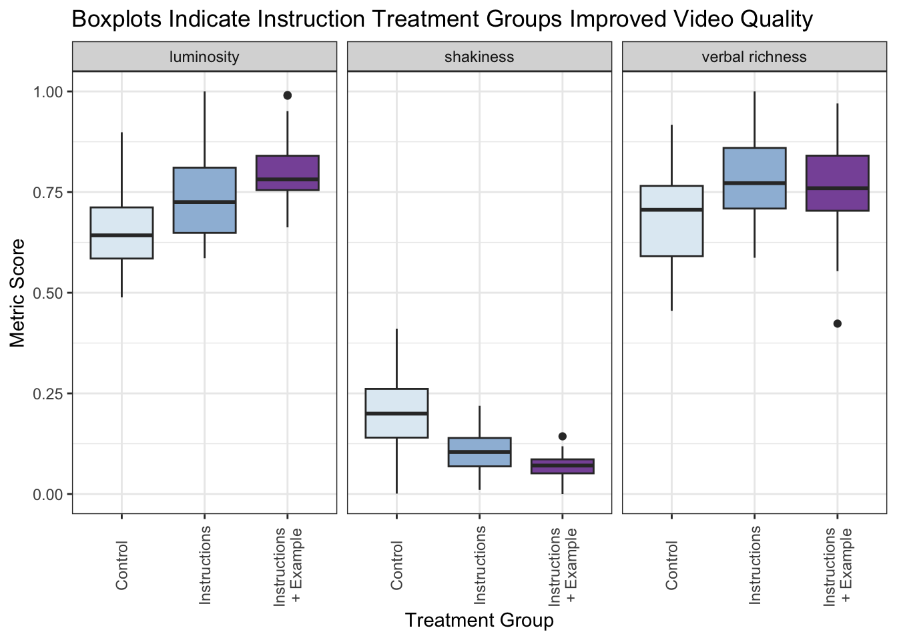

Testing How To Improve Video Response Quality in Remote Research
Using ANOVAs and t-tests to examine how specific instructions improve the quality of user-generated videos, helping researchers capture better insights while balancing participant effort.
One of the best aspects of dscout’s remote research platform is the ability to ask the study participants—affectionately called “scouts”—to record and share videos. These videos were used for a vast array of purposes, such as capturing in-the-moment tasks, real-time reactions to products, and encouraging rich responses to complex research questions. Here are a few examples from study designs I crafted for clients:
For a project about getting new users to try a brand’s breakfast food item for the first time.
“We want your immediate, unfiltered first reactions to {breakfast food item}! Please record a short video (about 60 seconds) as you take your first bite. As you taste it, tell us:
• How would you describe the flavor?
• What do you notice about the texture?
• After trying it, would you purchase it again—and why or why not?”
For a project about a workplace productivity tool to help a major technology corporation improve the accessibility of its product. Scouts with certain disabilities were recruited for this study, and at least three entries were required for this question.
“Show us how you use {tool} in your daily workflow. In a 2-3 minute video (for each task or use case), please screen share or capture your screen as you walk us through:
• The Task: What are you trying to accomplish with {tool}?
• Your Process: Which features are you using, and why?
• Your Feedback: What do you love about this process? Where do you get stuck or feel frustrated?
• Your Wishlist: If you could improve one thing about {tool} for this specific task, what would it be?”
For a project about scout’s fitness journey to help an online exercise app design a better experience for their users.
“In a short video (1–2 minutes), please describe why fitness is or is not important to you. Then, reflect on how fitness fits into (or clashes with) your daily routine, habits, and priorities.”
These videos all led clients towards actionable changes that improved products and experiences. However, for one project, the client was looking for more than just insights about the research question. They were creating a website on a fairly rare medical condition and were hoping to include testimonials from our scouts on their website—if granted permission of course!
The client repeatedly emphasized the importance of high-quality, professional-looking videos. While the video prompts in dscout’s platform include brief instructions on how to record and upload a video, I drafted additional instructions and suggestions for this diary-style study. As the medical condition could sometimes lead to shaky hands, I suggested asking a helper to take the video or using a prop to ensure a professional quality video. I also described what a good video would look and sound like, and included example images to help our scouts know how to position themselves in relation to the camera—angle, zoom, lighting, etc.
The client was thrilled with the quality of the videos that still captured the authentic feeling of an everyday individual living with the disease. From watching the videos myself, it felt like the quality was elevated compared to the standard scout video. I was curious if this was really the case and wanted to test it using dscout’s video quality automated sensors, which measure the verbal richness (the length and varied word choices of the response), luminosity (the lighting in the video), and shakiness of the video.
Even for videos used solely for internal research, the quality of user-submitted content directly affects the depth of insights we can generate. By improving video responses, we ensure that research participants’ voices are clearer, more detailed, and more actionable for product teams to design better experiences. Given the additional effort required from participants to follow detailed instructions, I wanted to test whether these extra steps meaningfully improved video quality—and if the trade-off was worth it.
To accomplish this, I’d need to run a new study with a more general recruitment population and include the exact same video question prompt for all the study participants, I proposed a brief study on what scouts like most about dscout and secured funding to proceed. I drafted the study design to include 3 treatment groups, outlined below.
1) Control Group: Received dscout’s standard video instructions.
2) Additional Instructions Group: Included the standard instructions along with a multiple select style question that required all boxes to be ticked before moving on. The instructions are detailed below:
• You’re the expert! Remember to explain your thought process and go into as much detail as possible in your response.
• Make sure your phone is steady as you record.
• Please remember to record your video in a well-lit space.
3) Additional Instructions + Example Group: Included the standard instructions, the multiple select style question above with additional instruction, and an example image to show what the final video should look like in terms of angle and lighting.
For the sample, I created a screener with minimal knockout criteria to recruit scouts representative of the general scout pool. I selected 100 scouts, aiming for at least 30 in each treatment group completing the study, and stratified by dscout experience to ensure that all of the seasoned dscout users didn’t randomly end up in the same treatment arm.
Once the fieldwork for the study ended, it was time to test my theory, with the null hypothesis being that the additional instructions do not improve video quality and the alternate hypothesis that they do improve video quality.
Please note: While I can’t share the actual results due to confidentiality, I’ve generated example data to illustrate the analysis. The below example includes data I generated to communicate the analysis process.
Results
The boxplot below illustrates how video quality metrics (luminosity, shakiness, and verbal richness) vary across the three treatment groups. Each box represents the distribution of values, with the median marked by the central line. By comparing these distributions, we can visually assess whether additional instructions led to improvements in video quality.
Code
video_qual_df %>%pivot_longer(cols =c(luminosity, shakiness, "verbal richness"), names_to ="metric") %>%ggplot(aes(x = group, y = value, fill = group)) +geom_boxplot() +facet_wrap(~metric) +theme_bw() +labs(x ="Treatment Group", y ="Metric Score", title ="Boxplots Indicate Instruction Treatment Groups Improved Video Quality") +scale_x_discrete(labels =c("control"="Control", "instructions"="Instructions", "instructions + example"="Instructions \n+ Example" )) +theme(legend.position ="none") +scale_fill_brewer(palette="BuPu") +theme(axis.text.x =element_text(angle =90, hjust =0.5, vjust =0.5))

To statistically test whether video quality metrics differ across treatment groups, I conducted a one-way ANOVA for each metric. If significant differences are found, this indicates that at least one group differs from the others.
Code
# Run ANOVA for each metric# luminosity anova_luminosity <-oneway.test(luminosity ~ group, data = video_qual_df, var.equal =TRUE)print(anova_luminosity)
One-way analysis of means
data: luminosity and group
F = 21.463, num df = 2, denom df = 97, p-value = 1.916e-08
Code
# shakinessanova_shakiness <-oneway.test(shakiness ~ group, data = video_qual_df, var.equal =FALSE) # Welch’s ANOVA because unequal varianceprint(anova_shakiness)
One-way analysis of means (not assuming equal variances)
data: shakiness and group
F = 31.371, num df = 2.000, denom df = 58.046, p-value = 5.799e-10
One-way analysis of means
data: `verbal richness` and group
F = 7.1451, num df = 2, denom df = 97, p-value = 0.001274
Since the ANOVA results indicate significant differences across groups, I conducted pairwise t-tests to determine which specific groups differ from each other.
Code
# Pairwise t-tests # Format pairwise test results, replacing p-values <0.001 with "<0.001"pairwise_tests <- video_qual_df %>%pivot_longer(cols =c(luminosity, shakiness, `verbal richness`), names_to ="metric") %>%group_by(metric) %>%summarise(control_vs_instructions =if_else(metric =="shakiness",t.test(value[group =="control"], value[group =="instructions"], var.equal =FALSE)$p.value,t.test(value[group =="control"], value[group =="instructions"], var.equal =TRUE)$p.value),control_vs_example =if_else(metric =="shakiness",t.test(value[group =="control"], value[group =="instructions + example"], var.equal =FALSE)$p.value,t.test(value[group =="control"], value[group =="instructions + example"], var.equal =TRUE)$p.value),instructions_vs_example =if_else(metric =="shakiness",t.test(value[group =="instructions"], value[group =="instructions + example"], var.equal =FALSE)$p.value,t.test(value[group =="instructions"], value[group =="instructions + example"], var.equal =TRUE)$p.value) ) %>%distinct() %>%mutate(across(where(is.numeric), ~ifelse(. <0.001, "<0.001", format(round(., 3), nsmall =3)))) # Replace small values# Print formatted table with clearer column namespairwise_tests %>%kable(col.names =c("Metric", "Control vs. Instructions (p-value)", "Control vs. Example (p-value)", "Instructions vs. Example (p-value)" ),caption ="Pairwise T-Test Results for Video Quality Metrics" )
Pairwise T-Test Results for Video Quality Metrics
Metric
Control vs. Instructions (p-value)
Control vs. Example (p-value)
Instructions vs. Example (p-value)
luminosity
<0.001
<0.001
0.011
shakiness
<0.001
<0.001
<0.001
verbal richness
<0.001
0.015
0.292
The results revealed clear differences across the metrics:
Luminosity
Videos recorded by participants in the Instructions group (µ = 0.74) and Instructions + Example group (µ = 0.80) were significantly brighter than those in the Control group (µ = 0.65, p < 0.001 for each).
The Instructions + Example group also had significantly higher luminosity scores than the Instructions group (p = 0.011).
These results suggest that even minimal guidance improves lighting conditions, and including an example image further enhances video brightness.
Shakiness
The Control group had the highest shakiness scores (µ = 0.20), indicating less stable video recordings.
Both the Instructions (µ = 0.11) and Instructions + Example (µ = 0.07) groups significantly reduced shakiness compared to the Control group (p < 0.001 for each).
Additionally, the Instructions + Example group achieved greater stability than the Instructions group (p < 0.001).
This suggests that even simple reminders improve video steadiness, and an example further reinforces proper recording techniques.
Verbal Richness
Participants in the Instructions group (µ = 0.79) used significantly more varied and verbose language than those in the Control group (µ = 0.69, p < 0.001).
The Instructions + Example group (µ = 0.76) also showed an improvement over the Control group (p = 0.015), though the difference between the Instructions and Instructions + Example groups was not statistically significant (p = 0.292).
This suggests that additional instructions alone encourage richer verbal responses, while the example image may not contribute as much to this specific aspect.
Conclusions
This experiment provides a research-backed recommendation for designing remote video tasks: clear, structured instructions significantly improve video quality. By applying similar structured guidance to other research methods—such as mobile diary studies or self-reported usability tests—UX researchers can ensure richer, more actionable user insights. For UX teams conducting remote research, these findings suggest that small, well-placed instructions can significantly improve response quality—without requiring complex interventions or additional moderation.
I presented these results to the team at an all-company meeting, and many other research advisors at dscout used the additional instructions I crafted for their clients.
Along with the video findings, the scouts’ awesome videos allowed me to create a fun compilation of the scouts sharing their love for dscout that was shared in the holiday party.
Citation
BibTeX citation:
@online{white2022,
author = {White, Lewis},
title = {Testing {How} {To} {Improve} {Video} {Response} {Quality} in
{Remote} {Research}},
date = {2022-05-01},
url = {https://lewis-r-white.github.io/posts/2022-05-01-video-quality-dscout/},
langid = {en}
}